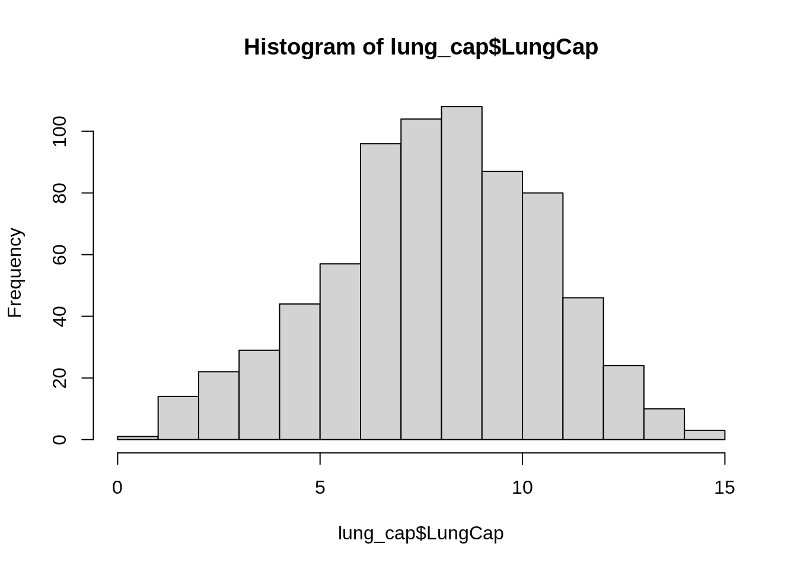
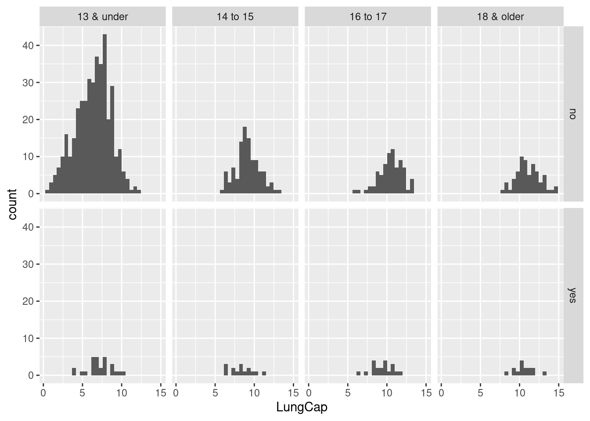

Use the LungCapData to answer the following questions.
Code
# read in datalung_cap<-read_xls("_data/LungCapData.xls")lung_cap
# A tibble: 725 × 6
LungCap Age Height Smoke Gender Caesarean
<dbl> <dbl> <dbl> <chr> <chr> <chr>
1 6.48 6 62.1 no male no
2 10.1 18 74.7 yes female no
3 9.55 16 69.7 no female yes
4 11.1 14 71 no male no
5 4.8 5 56.9 no male no
6 6.22 11 58.7 no female no
7 4.95 8 63.3 no male yes
8 7.32 11 70.4 no male no
9 8.88 15 70.5 no male no
10 6.8 11 59.2 no male no
# … with 715 more rows
a. What does the distribution of LungCap look like?
Code
#plot histogramhist(lung_cap$LungCap)

The histogram shows that the distribution is pretty close to a normal distribution, with an almost a bell shaped curve. Meaning that the data near the mean are more of a frequent occurrence which is true because there are fewer observations near the margins.
b. compare the probability distribution of the LungCap with respect to Males and Females?
The box plot shows that male’s have a slightly higher lung capacity than females. Female’s have more values in the first quartile range and a lower minimum value than male’s. On the other hand male’s have a higher max value and more values in the 3rd quartile range.
c. Compare the mean lung capacities for smokers and non-smokers. Does it make sense?
# A tibble: 2 × 2
Smoke avg_lung_cap
<chr> <dbl>
1 no 7.77
2 yes 8.65
This does not make sense. Smokers have a higher sample mean than non-smokers which intuitively does not make sense because we would assume non-smokers would have a higher lung capacity.
d. Examine the relationship between Smoking and Lung Capacity within age groups: “less than or equal to 13”, “14 to 15”, “16 to 17”, and “greater than or equal to 18”.
Code
#categorical variable of age_groups df<- lung_cap %>%group_by(Smoke,LungCap) %>%summarise(age_group =case_when(Age<=13~"13 & under",Age ==14| Age ==15~"14 to 15",Age==16| Age ==17~"16 to 17", Age>=18~"18 & older"))
`summarise()` has grouped output by 'Smoke', 'LungCap'. You can override using
the `.groups` argument.
Code
#mean of lung capacity with new variabledf %>%group_by(Smoke, age_group) %>%summarise(avg_lung_cap =mean(LungCap)) %>%arrange(desc(avg_lung_cap))
`summarise()` has grouped output by 'Smoke'. You can override using the
`.groups` argument.
# A tibble: 8 × 3
# Groups: Smoke [2]
Smoke age_group avg_lung_cap
<chr> <chr> <dbl>
1 no 18 & older 11.1
2 yes 18 & older 10.5
3 no 16 to 17 10.5
4 yes 16 to 17 9.38
5 no 14 to 15 9.14
6 yes 14 to 15 8.39
7 yes 13 & under 7.20
8 no 13 & under 6.36
`stat_bin()` using `bins = 30`. Pick better value with `binwidth`.

Using the package ggplot I used the function facet_grids to show a good visualization of the lung capacity between non-smokers and smokers within each age group. Looking at the histograms all age_groups that are non-smokers have a higher sample mean proving that non-smokers have
e. Compare the lung capacities for smokers and non-smokers within each age group. Is your answer different from the one in part d. What could possibly be going on here?
Code
# Mean of non-smokers 13 & youngerdf %>%filter(Smoke =='no'& age_group =='13 & under') %>%pull(LungCap) %>%mean()
[1] 6.358746
Code
# Mean of smokers 13 & youngerdf %>%filter(Smoke =='yes'& age_group =='13 &under') %>%pull(LungCap) %>%mean()
[1] NaN
Code
#Mean of non-smokers 14 to 15df %>%filter(Smoke =='no'& age_group =='14 to 15') %>%pull(LungCap) %>%mean()
[1] 9.13881
Code
#Mean of smokers 14 to 15df %>%filter(Smoke =='yes'& age_group =='14 to 15') %>%pull(LungCap) %>%mean()
[1] 8.391667
Code
#Mean of non-smokers 16 to 17df %>%filter(Smoke =='no'& age_group =='16 to 17') %>%pull(LungCap) %>%mean()
[1] 10.46981
Code
#Mean of smokers 16 to 17df %>%filter(Smoke =='yes'& age_group =='16 to 17') %>%pull(LungCap) %>%mean()
# Mean of smokers 18 & olderdf %>%filter(Smoke =='yes'& age_group =='18 & older') %>%pull(LungCap) %>%mean()
[1] 10.51333
Code
lung_cap
# A tibble: 725 × 6
LungCap Age Height Smoke Gender Caesarean
<dbl> <dbl> <dbl> <chr> <chr> <chr>
1 6.48 6 62.1 no male no
2 10.1 18 74.7 yes female no
3 9.55 16 69.7 no female yes
4 11.1 14 71 no male no
5 4.8 5 56.9 no male no
6 6.22 11 58.7 no female no
7 4.95 8 63.3 no male yes
8 7.32 11 70.4 no male no
9 8.88 15 70.5 no male no
10 6.8 11 59.2 no male no
# … with 715 more rows
f. Calculate the correlation and covariance between Lung Capacity and Age. (use the cov() and cor() functions in R). Interpret your results.
Code
#Correlationcor(lung_cap$LungCap, lung_cap$Age)
[1] 0.8196749
Code
#Covariancecov(lung_cap$LungCap, lung_cap$Age)
[1] 8.738289
The correlation is 0.81 which is pretty close to +1, meaning that the there is a positive relationship between lung capacity and age. The covariance is also high which shows that the two variables of lung capacity and age have a positive relationship. #2 Let X = number of prior convictions for prisoners at a state prison at which there are 810 prisoners.
The variance is 0.856 and the standard deviation is 0.925.
Source Code
---title: "ShoshanaBuck-HW1"author: "Shoshana Buck"description: "First homeowrk on descriptive statistics and probability"date: "10/03/22"format: html: toc: true code-fold: true code-copy: true code-tools: truecategories: - hw1 - desriptive statistics - probability---```{r}#install librarieslibrary(tidyverse)library(readxl)library(ggplot2)```# Question 1Use the LungCapData to answer the following questions.```{r}# read in datalung_cap<-read_xls("_data/LungCapData.xls")lung_cap```### a. What does the distribution of LungCap look like?```{r}#plot histogramhist(lung_cap$LungCap)```The histogram shows that the distribution is pretty close to a normal distribution, with an almost a bell shaped curve. Meaning that the data near the mean are more of a frequent occurrence which is true because there are fewer observations near the margins.### b. compare the probability distribution of the LungCap with respect to Males and Females?```{r}#Box plotggplot(lung_cap, aes (Gender,LungCap)) +geom_boxplot()```The box plot shows that male's have a slightly higher lung capacity than females. Female's have more values in the first quartile range and a lower minimum value than male's. On the other hand male's have a higher max value and more values in the 3rd quartile range.### c. Compare the mean lung capacities for smokers and non-smokers. Does it make sense?```{r}lung_cap %>%group_by(Smoke) %>%summarise(avg_lung_cap =mean(LungCap))```This does not make sense. Smokers have a higher sample mean than non-smokers which intuitively does not make sense because we would assume non-smokers would have a higher lung capacity.### d. Examine the relationship between Smoking and Lung Capacity within age groups: "less than or equal to 13", "14 to 15", "16 to 17", and "greater than or equal to 18".```{r}#categorical variable of age_groups df<- lung_cap %>%group_by(Smoke,LungCap) %>%summarise(age_group =case_when(Age<=13~"13 & under",Age ==14| Age ==15~"14 to 15",Age==16| Age ==17~"16 to 17", Age>=18~"18 & older")) #mean of lung capacity with new variabledf %>%group_by(Smoke, age_group) %>%summarise(avg_lung_cap =mean(LungCap)) %>%arrange(desc(avg_lung_cap))#histogramggplot(df, aes(x = LungCap)) +facet_grid(Smoke ~age_group) +geom_histogram()```Using the package ***ggplot*** I used the function *facet_grids* to show a good visualization of the lung capacity between non-smokers and smokers within each age group. Looking at the histograms all *age_groups* that are non-smokers have a higher sample mean proving that non-smokers have### e. Compare the lung capacities for smokers and non-smokers within each age group. Is your answer different from the one in part d. What could possibly be going on here?```{r}# Mean of non-smokers 13 & youngerdf %>%filter(Smoke =='no'& age_group =='13 & under') %>%pull(LungCap) %>%mean()# Mean of smokers 13 & youngerdf %>%filter(Smoke =='yes'& age_group =='13 &under') %>%pull(LungCap) %>%mean()#Mean of non-smokers 14 to 15df %>%filter(Smoke =='no'& age_group =='14 to 15') %>%pull(LungCap) %>%mean()#Mean of smokers 14 to 15df %>%filter(Smoke =='yes'& age_group =='14 to 15') %>%pull(LungCap) %>%mean()#Mean of non-smokers 16 to 17df %>%filter(Smoke =='no'& age_group =='16 to 17') %>%pull(LungCap) %>%mean()#Mean of smokers 16 to 17df %>%filter(Smoke =='yes'& age_group =='16 to 17') %>%pull(LungCap) %>%mean()#Mean of non-smokers 18 & olderdf %>%filter(Smoke =='no'& age_group =='18 & older') %>%pull(LungCap) %>%mean()# Mean of smokers 18 & olderdf %>%filter(Smoke =='yes'& age_group =='18 & older') %>%pull(LungCap) %>%mean()lung_cap```### f. Calculate the correlation and covariance between Lung Capacity and Age. (use the cov() and cor() functions in R). Interpret your results.```{r}#Correlationcor(lung_cap$LungCap, lung_cap$Age)#Covariancecov(lung_cap$LungCap, lung_cap$Age)```The correlation is 0.81 which is pretty close to +1, meaning that the there is a positive relationship between lung capacity and age. The covariance is also high which shows that the two variables of lung capacity and age have a positive relationship. #2 Let X = number of prior convictions for prisoners at a state prison at which there are 810 prisoners.```{r}# x= prior convictions x<-c(0, 1, 2, 3, 4)frequency<-c(128, 434, 160, 64, 24)state_prison<-data_frame(x,frequency)state_prison```### a. What is the probability that a randomly selected inmate has exactly 2 prior convictions?```{r}# 2 prior convictions.P(2)/total160/810```There is a 1.9% probability that a randomly selected inmate has exactly 2 prior convictions.### b. What is the probability that a randomly selected inmate has fewer than 2 prior convictions?```{r}# less than 2 prior convictions. (P(0) + P(1))/total (128+434)/810```There is a 6.9% probability that a randomly selected inmate has fewer than 2 prior convictions.### c. What is the probability that a randomly selected inmate has 2 or fewer prior convictions?```{r}# 2 or fewer prior convictions. (P(0) + P(1) + P(2)) +total(128+434+160)/810```There is a 8.9% probability that a randomly selected inmate has 2 or fewer prior convictions.### d. What is the probability that a randomly selected inmate has more than 2 prior convictions?```{r}# More than 2 prior convictions. (P(3) +P(4)) + total(64+24)/810```There is a 10.8% probability that a randomly selected inmate has more than 2 prior convictions.### e. What is the expected value for the number of prior convictions?```{r}#Prior convictions. ((0*P(0)) +(1*(P(1)) + (2*P(2)) + (3*P(3)) + (4*P(4)))df<-((128*0/810) +(434*1/810) +(160*2/810) +(64*3/810) +(24*4/810)) mean(df)```The expected value for number of prior convictions is 1.28### f. Calculate the variance and the standard deviation for the Prior Convictions.```{r}# variancev<- ((0-1.28)^2) *(128/810) +((1-1.28)^2) * (434/810)+((2-1.28)^2) * (160/810)+((3-1.28)^2) *(64/810) +((4-1.28)^2) * (24/810)v# standard deviationsd<-sqrt(v)sd```The variance is 0.856 and the standard deviation is 0.925.